사회조사분석사-2급 (2020-08-22 기출문제)
1과목: 조사방법론 I
1. 양적연구와 질적연구에 관한 설명으로 옳지 않은 것은?
- 양적연구는 연구자와 연구대상이 독립적이라는 인식론에 기초한다.
- 질적연구는 현실 인식의 주관성을 강조한다.
- 질적연구는 연역적 과정에 기초한 설명과 예측을 목적으로 한다.
- 양적연구는 가치중립성과 편견의 배제를 강조한다.
(정답률: 66%)

2. 사회과학 연구방법을 연구목적에 따라 구분할 때, 탐색적 연구의 목적에 해당하는 것을 모두 고른 것은?
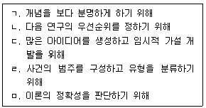
- ㄱ, ㄴ, ㄷ
- ㄱ, ㄷ, ㄹ
- ㄴ, ㄹ, ㅁ
- ㄴ, ㄷ, ㄹ, ㅁ
(정답률: 44%)
3. 조사자의 주관이 개입될 가능성이 가장 높은 자료수집방법은?
- 면접조사
- 온라인조사
- 우편조사
- 전화조사
(정답률: 83%)
4. 우편조사에 대한 설명으로 틀린 것은?
- 비용이 적게 든다.
- 자기기입식 조사이다.
- 면접원에 의한 편향(bias)이 없다.
- 조사대상 지역이 제한적이다.
(정답률: 76%)
5. 두 변수 X, Y 중 X의 변화가 Y의 변화를 생산해 낼 경우 X와 Y의 관계로 옳은 것은?
- 상관관계
- 인과관계
- 선후관계
- 회귀관계
(정답률: 70%)
6. 다음 기업조사 설문의 응답 항목이 가지고 있는 문제점은?
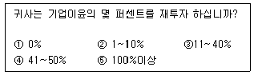
- 간결성
- 명확성
- 포괄성
- 상호배제성
(정답률: 66%)
7. 사례조사연구의 목적으로 가장 적합한 것은?
- 명제나 가설의 검증
- 연구대상에 대한 기술과 탐구
- 분석단위의 파악
- 연구결과에 대한 일반화
(정답률: 58%)
8. 좋은 가설의 평가기준으로 옳지 않은 것은?
- 가설의 표현은 간단명료해야 한다.
- 가설은 경험적으로 검증할 수 있어야 한다.
- 계량화 가능성은 가설의 평가기준이 될 수 없다.
- 가설은 동의반복이어서는 안된다.
(정답률: 77%)
9. 단일집단 사후측정설계에 관한 설명으로 옳은 것은?
- 외적타당도가 높다.
- 실험적 처치를 필요로 하지 않는다.
- 인과관계를 규명하는데 취약한 설계이다.
- 외생변수를 쉽게 통제할 수 있다.
(정답률: 44%)
10. 면접조사 시 유의해야 할 사항으로 틀린 것은?
- 응답의 내용은 조사자가 해석하여 요약·정리해 둔다.
- 응답자와 친숙한 분위기(rapport)를 형성한다.
- 조사자는 응답자가 이질감을 느끼지 않도록 복장이나 언어사용에 유의한다.
- 조사자는 조사에 임하기 전에 스스로 질문내용에 대해 숙지한다.
(정답률: 78%)
11. 비과학적 지식 형성 방법 중 직관에 의한 지식형성의 오류에 해당하지 않는 것은?
- 부정확한 관찰
- 지나친 일반화
- 자기중심적 현상 이해
- 분명한 명제에서 출발
(정답률: 78%)
12. 다음 중 대규모 모집단의 특성을 기술하기에 유용한 방법은?
- 참여관찰(participant observation)
- 표본조사(sample survey)
- 유사실험(quasi-experiment)
- 내용분석(contents analysis)
(정답률: 76%)
13. 연구 진행 과정에서 위약효과(placebo effect)가 큰 것으로 의심이 될 때 연구자가 유의해야 할 점은?
- 연구대상자 수를 줄여야 한다.
- 사전조사와 본조사의 간격을 줄여야 한다.
- 연구결과를 일반화시키지 말아야 한다.
- 연구대상자에게 피험자임을 인식시켜야 한다.
(정답률: 67%)
14. 소득수준과 출산력의 관계를 알아볼 때, 개별사례를 바탕으로 어떤 일반적 유형을 찾아내는 방법은?
- 연역적 방법
- 귀납적 방법
- 참여관찰법
- 질문지법
(정답률: 69%)
15. 다음 중 외생변수의 통제가 가장 용이한 실험설계는?
- 비동질 통제집단 사전사후측정 설계
- 단일집단 사전사후측정 설계
- 집단 비교설계
- 통제집단 사전사후측정 설계
(정답률: 66%)
16. 내용분석에 관한 설명으로 틀린 것은?
- 조사대상에 영향을 미친다.
- 시간과 비용 측면에서 경제성이 있다.
- 일정기간 진행되는 과정에 대한 분석이 용이하다.
- 연구 진행 중에 연구계획의 부분적인 수정이 가능하다.
(정답률: 61%)
17. 다음 중 실험설계의 특징이 아닌 것은?
- 실험의 검증력을 극대화 시키고자 하는 시도이다.
- 연구가설의 진위여부를 확인하는 구조화된 절차이다.
- 실험의 내적 타당도를 확보하기 위한 노력이다.
- 조작적 상황을 최대한 배제하고 자연적 상황을 유지해야 하는 표준화된 절차이다.
(정답률: 75%)
18. 설문지 작성에서 질문의 순서를 결정할 때 고려할 사항이 아닌 것은?
- 시작하는 질문은 쉽고 흥미를 유발할 수 있어야 한다.
- 인적사항이나 사생활에 대한 질문은 가급적 처음에 묻는다.
- 일반적인 내용을 먼저 묻고, 다음에 구체적인 것을 묻도록 한다.
- 연상작용을 일으키는 문항들은 간격을 멀리 떨어뜨려 놓는다.
(정답률: 79%)
19. 사회조사의 윤리적 원칙으로 옳지 않은 것은?
- 윤리적 원칙은 연구결과의 보고에도 적용된다.
- 고지된 동의서는 조사자를 보호하기 위해 활용될 수 있다.
- 연구 참여에 따른 위험과 더불어 혜택도 고지되어야 한다.
- 조사대상자의 익명성은 조사결과를 읽는 사람에게만 해당된다.
(정답률: 78%)
20. 다음 중 과학적 연구의 특징으로 옳은 것을 모두 고른 것은?
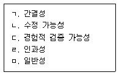
- ㄱ, ㄴ, ㄹ
- ㄴ, ㄹ, ㅁ
- ㄱ, ㄴ, ㄷ, ㄹ
- ㄱ, ㄴ, ㄷ, ㄹ, ㅁ
(정답률: 67%)
21. 관찰조사방법의 장점으로 옳지 않은 것은?
- 비언어적 자료를 수집하는데 효과적이다.
- 장기적인 연구조사를 할 수 있다.
- 환경변수를 완벽하게 통제할 수 있다.
- 자연스러운 연구 환경의 확보가 용이하다.
(정답률: 76%)
22. 정당 공천에 앞서 당선 가능성이 높은 후보를 알아보고자 할 때 가장 적합한 조사 방법은?
- 단일사례 관찰조사
- 델파이 조사
- 표본집단 설문조사
- 초점집단 면접조사
(정답률: 65%)
23. 다음 중 연구대상에 영향을 미칠 가능성이 가장 적은 것은?
- 완전관찰자
- 관찰자로서의 참여자
- 참여자로서의 관찰자
- 완전참여자
(정답률: 70%)
24. 다음 중 질문지 작성 시 요구되는 원칙이 아닌 것은?
- 규범성
- 간결성
- 명확성
- 가치중립성
(정답률: 66%)
25. 온라인조사의 특징과 관계가 없는 내용은?
- 응답자에 대한 접근이 용이하다.
- 응답자의 익명성이 보장되기 어렵다.
- 현장조사에 비해서 경비를 절감할 수 있다.
- 표본의 대표성 확보가 용이하다.
(정답률: 50%)
26. 정확한 응답을 유도하거나 응답이 지엽적으로 흐르는 것을 막기 위해 추가질문을 행하는 것은?
- 캐어묻기(probing)
- 맞장구쳐주기(reinforcement)
- 라포(rapport)
- 단계적 이행(transition)
(정답률: 71%)
27. 연구문제가 학문적으로 의미 있는 것이라고 할 때, 학문적 기준과 가장 거리가 먼 것은?
- 독창성을 가져야 한다.
- 이론적인 의의를 지녀야 한다.
- 경험적 검증가능성이 있어야 한다.
- 광범위하고 질문형식으로 쓴 상태여야 한다.
(정답률: 71%)
28. 전문가의 견해를 물어 종합적인 상황을 파악하거나 미래의 불확실한 상황을 예측할 때 주로 이용되는 조사기법은?
- 이차적 연구(secondary research)
- 코호트(cohort) 설계
- 추세(trend) 설계
- 델파이(delphi) 기법
(정답률: 64%)
29. 실제 연구가 가능한 주제가 되기 위한 조건과 가장 거리가 먼 것은?
- 기존의 이론 체계와 반드시 관련이 있어야 한다.
- 연구현상이 실증적으로 검증 가능해야 한다.
- 연구문제가 관찰 가능한 현상과 밀접히 연결되어야 한다.
- 연구대상이 되는 현상에 대한 명확한 규정이 존재해야 한다.
(정답률: 61%)
30. 다음 중 개방형 질문의 특징이 아닌 것은?
- 자료처리를 위한 코딩이 쉬운 장점을 갖는다.
- 예기치 않은 응답을 발견할 수 있다.
- 자세하고 풍부한 응답내용을 얻을 수 있다.
- 탐색조사에서 특히 유용한 질문의 형태이다.
(정답률: 79%)
2과목: 조사방법론 II
31. 타당도에 관한 설명으로 옳은 것을 모두 고른 것은?
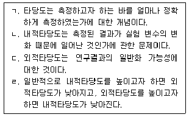
- ㄱ
- ㄱ, ㄴ
- ㄱ, ㄴ, ㄷ
- ㄱ, ㄴ, ㄷ, ㄹ
(정답률: 54%)
32. 단순무작위표집에 대한 설명으로 틀린 것은?
- 표본이 모집단으로부터 추출된다.
- 모든 요소가 동등한 확률을 가지고 추출된다.
- 구성요소가 바로 표집단위가 되는 것은 아니다.
- 표집 시 보편적인 방법은 난수표를 사용하는 것이다.
(정답률: 60%)
33. 표본크기를 결정할 때 고려하는 사항과 가장 거리가 먼 것은?
- 모집단의 동질성
- 모집단의 크기
- 척도의 유형
- 신뢰도
(정답률: 44%)
34. 타당도에 대한 설명으로 옳지 않은 것은?
- 조사자가 측정하고자 하는 것을 어느 정도 하였는가의 문제이다.
- 같은 대상의 속성을 반복적으로 측정할 때 같은 측정 결과를 가져올 수 있는 정도를 말한다.
- 여러 가지 조작적 정의를 이용해 측정을 하고, 각 측정값 사이의 상관관계를 조사하여 타당도를 가한다.
- 외적타당도란 연구결과를 일반화시킬 수 있는 정도를 의미한다.
(정답률: 65%)
35. 리커트(Likert)척도를 작성하는 기본절차와 가장 거리가 먼 것은?
- 척도문항의 선정과 척도의 서열화
- 응답자의 진술문항 선정과 각 문항에 대한 응답자들의 서열화
- 응답범주에 대한 배점과 응답자들의 총점순위에 따른 배열
- 상위응답자들과 하위응답자들의 각 문항에 대한 판별력의 계산
(정답률: 25%)
36. 신뢰도와 타당도 간의 관계에 관한 설명으로 가장 거리가 먼 것은?
- 신뢰도가 높은 측정은 항상 타당도가 높다.
- 타당도가 높은 측정은 항상 신뢰도가 높다.
- 신뢰도가 낮은 측정은 항상 타당도가 낮다.
- 타당도가 낮다고 해서 반드시 신뢰도가 낮은 것은 아니다.
(정답률: 56%)
37. 서열측정을 위한 방법으로 단순합산법을 사용하는 대표적인 척도는?
- 거트만(Guttman)척도
- 서스톤(Thurstone)척도
- 리커트(Likert)척도
- 보가더스(Bogardus)척도
(정답률: 49%)
38. 일반적으로 표집방법들 간의 표집효과를 계산할 때 준거가 되는 표집방법은?
- 군집표집
- 체계적표집
- 층화표집
- 단순무작위표집
(정답률: 53%)
39. 다음은 어떤 척도에 관한 설명인가?
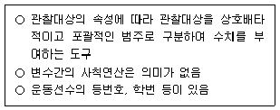
- 명목척도
- 서열척도
- 등간척도
- 비율척도
(정답률: 70%)
40. 의미분화척도(semantic differential scale)의 특성으로 옳지 않은 것은?
- 언어의 의미를 측정하기 위한 것으로, 응답자의 태도를 측정하는 데 적당하지 않다.
- 양적 판단법으로 다변량 분석에 적용이 용이하도록 자료를 얻을 수 있게 해주는 방법이다.
- 척도의 양극단에 서로 상반되는 형용사나 표현을 이용해서 측정한다.
- 의미적 공간에 어떤 대상을 위치시킬 수 있다는 이론적 가정을 사용한다.
(정답률: 54%)
41. 다음에서 사용한 표집방법은?
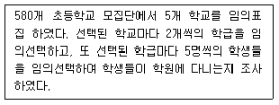
- 단순무작위표집
- 층화표집
- 군집표집
- 할당표집
(정답률: 31%)
42. 표집과 관련된 용어에 대한 설명으로 틀린 것은?
- 모수(parameter)는 표본에서 어떤 변수가 가지고 있는 특성을 요약한 통계치이다.
- 표집률(sampling ratio)은 모집단에서 개별요소가 선택될 비율이다.
- 표집간격(sampling interval)은 모집단으로부터 표본을 추출할 때 추출되는 요소와 요소간의 간격을 의미한다.
- 관찰단위(observation unit)는 직접적인 조사대상을 의미한다.
(정답률: 53%)
43. 측정의 신뢰성을 향상시킬 수 있는 방법으로 가장 거리가 먼 것은?
- 측정도구에 포함된 내용이 측정하고자 하는 내용을 대표할 수 있도록 한다.
- 응답자가 모르는 내용은 측정하지 않는다.
- 측정항목의 모호성을 제거한다.
- 측정항목의 수를 늘린다.
(정답률: 41%)
44. 외적타당도를 저해하는 요소에 관한 설명이 아닌 것은?
- 측정도구나 관찰자에 따라 측정이 달라질 수 있다.
- 측정 자체가 실험대상자들의 행동을 변화시킬 수 있다.
- 실험대상자 선정에서 오는 편향과 독립변수 간에 상호작용이 있을 수 있다.
- 연구의 결과가 일반화될 수 있는가의 여부는 표집뿐만 아니라 생태학적 상황에 의해서도 결정될 수 있다.
(정답률: 28%)
45. 질적변수(qualitative variable)와 양적변수(quantitative variable)에 관한 설명으로 틀린 것은?
- 성별, 종교, 직업, 학력 등을 나타내는 변수는 질적변수이다.
- 질적변수에서 양적변수로의 변환은 거의 불가능하다.
- 계량적 변수 혹은 메트릭(metric) 변수라고 불리는 것은 양적변수이다.
- 양적변수는 몸무게나 키와 같은 이산변수(discrete variable)와 자동차의 판매대수와 같은 연속변수(continuous variable)로 나누어진다.
(정답률: 42%)
46. 확률표집방법에 해당하지 않는 것은?
- 체계적표집(systematic sampling)
- 군집표집(cluster sampling)
- 할당표집(quota sampling)
- 층화표집(stratified random sampling)
(정답률: 63%)
47. 자료에 대한 통계분석 방법 결정시 가장 중요하게 고려해야 할 측정의 요소는?
- 신뢰도
- 타당도
- 측정방법
- 측정수준
(정답률: 24%)
48. 측정 오차에 관한 설명으로 틀린 것은?
- 체계적 오차는 사회적 바람직성 편견, 문화적 편견과 관련이 있다.
- 비체계적 오차는 일관적 영향 패턴을 가지지 않고 측정을 일관성 없게 만든다.
- 측정의 신뢰도는 체계적 오차와 관련성이 크고, 측정의 타당도는 비체계적 오차와 관련성이 크다.
- 측정의 오차를 피하기 위해 간과했을 수도 있는 편견이나 모호함을 찾아내기 위해 동료들의 피드백을 얻는다.
(정답률: 60%)
49. 개념적 정의에 대한 설명으로 틀린 것은?
- 순환적인 정의를 해야 한다.
- 적극적 혹은 긍정적인 표현을 써야 한다.
- 정의하려는 대상이 무엇이든 그것만의 특유한 요소나 성질을 직시해야 한다.
- 뜻이 분명해서 누구나 알아들을 수 있는 의미를 공유하는 용어를 써야 한다.
(정답률: 54%)
50. 다음 ( )안에 들어갈 알맞은 것은?
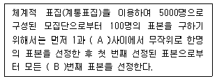
- A: 50, B: 50
- A: 10, B: 50
- A: 100, B: 50
- A: 100, B: 100
(정답률: 47%)
51. 표본의 크기에 관한 설명으로 틀린 것은?
- 표본의 크기는 전체적인 조사목적, 비용 등을 감안하여 결정한다.
- 부분집단별 분석이 필요한 경우에는, 표본의 수를 작게 하는 대신 무응답을 줄이려고 노력한다.
- 일반적으로 표본의 크기가 증가할수록 표본오차의 크기는 감소한다.
- 비확률 표본추출법의 경우 표본의 크기와 표본오차와는 무관하다.
(정답률: 25%)
52. 척도와 지수에 관한 설명으로 옳지 않은 것은?
- 지수는 개별적인 속성들에 할당된 점수들을 합산하여 구한다.
- 척도는 속성들 간에 존재하고 있는 강도(intensity) 구조를 이용한다.
- 지수는 척도보다 더 많은 정보를 제공해준다.
- 척도와 지수 모두 변수에 대한 서열측정이다.
(정답률: 49%)
53. 변수에 관한 설명으로 가장 거리가 먼 것은?
- 변수는 연구대상의 경험적 속성을 나타내는 개념이다.
- 인과적 조사연구에서 독립변수란 종속변수의 원인으로 추정되는 변수이다.
- 외재적 변수는 독립변수와 종속변수와의 관계에 개입하면서 그 관계에 영향을 미칠 수 있는 제3의 변수이다.
- 잠재변수와 측정변수는 변수를 측정하는 척도의 유형에 따른 것이다.
(정답률: 51%)
54. 다음 사례에서 사용한 표집방법은?
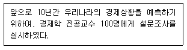
- 할당표집
- 판단표집
- 편의표집
- 눈덩이표집
(정답률: 54%)
55. 특정한 구성개념이나 잠재변수의 값을 측정하기 위해 측정할 내용이나 측정방법을 구체적으로 정확하게 표현하고 의미를 부여하는 것은?
- 구성적 정의(constitutive definition)
- 조작적 정의(operational definition)
- 개념화(conceptualization)
- 패러다임(paradigm)
(정답률: 60%)
56. 다음 표본추출방법 중 표집오차의 추정이 확률적으로 가능한 것은?
- 할당표집
- 판단표집
- 편의표집
- 단순무작위표집
(정답률: 66%)
57. 표집에서 가장 중요한 요인은?
- 대표성과 경제성
- 대표성과 신속성
- 대표성과 적절성
- 정확성과 경제성
(정답률: 63%)
58. 측정도구의 신뢰도 검사방법에 관한 설명으로 옳지 않은 것은?
- 검사-재검사법(test-retest method)은 측정대상이 동일하다.
- 복수양식법(parallel-forms method)은 측정도구가 동일하다.
- 반분법(split-half method)은 측정도구의 문항을 양분한다.
- 크론바하 알파(Cronbach’s alpha) 계수는 0에서 1 사이의 값을 가지며, 값이 높을수록 신뢰도가 높다.
(정답률: 60%)
59. 실험에서 인과관계를 추론하기 위해서 서로 다른 값을 갖도록 처치를 하는 변수는?
- 외적변수
- 종속변수
- 매개변수
- 독립변수
(정답률: 49%)
60. 사회조사에서 발생하는 측정오차의 원인과 가장 거리가 먼 것은?
- 조사의 목적
- 측정대상자의 상태 변화
- 환경적 요인의 변화
- 측정도구와 측정대상자의 상호작용
(정답률: 69%)
3과목: 사회통계
61. 어느 회사에서는 두 공장 A와 B에서 제품을 생산하고 있다. 각 공장에서 8개와 10개의 제품을 임의로 추출하여 수명을 조사한 결과 다음의 결과를 얻었다.
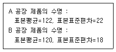
다음과 같은 t-검정통계량을 사용하여 두 공장 제품의 수명에 차이가 있는지를 검정하고자 할 때, 필요한 가정이 아닌 것은?
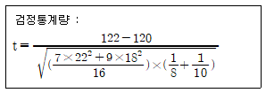
- 두 공장 A, B의 제품의 수명은 모두 정규분포를 따른다.
- 공장 A의 제품에서 임의추출한 표본과 공장 B의 제품에서 임의추출한 표본은 서로 독립이다.
- 두 공장 A, B에서 생산하는 제품 수명의 분산은 동일하다.
- 두 공장 A, B에서 생산하는 제품 수명의 중위수는 같다.
(정답률: 44%)
62. 이라크 파병에 대한 여론조사를 실시했다. 100명을 무작위로 추출하여 조사한 결과 56명이 파병에 대해 찬성했다. 이 자료로부터 파병을 찬성하는 사람이 전 국민의 과반수 이상이 되는지를 유의수준 5%에서 통계적 가설검정을 실시했다. 다음 중 옳은 것은?
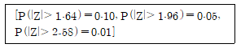
- 찬성률이 전 국민의 과반수이상이라고 할 수 있다.
- 찬성률이 전 국민의 과반수이상이라고 할 수 없다.
- 표본의 수가 부족해서 결론을 얻을 수 없다.
- 표본의 과반수이상이 찬성해서 찬성률이 전 국민의 과반수이상이라고 할 수 있다.
(정답률: 32%)
63. 다음 ( )에 들어갈 분석방법으로 옳은 것은?
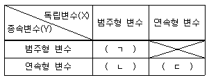
- ㄱ: 교차분석, ㄴ: 분산분석, ㄷ: 회귀분석
- ㄱ: 교차분석, ㄴ: 회귀분석, ㄷ: 분산분석
- ㄱ: 분산분석, ㄴ: 분산분석, ㄷ: 회귀분석
- ㄱ: 회귀분석, ㄴ: 회귀분석, ㄷ: 분산분석
(정답률: 53%)
64. 다음 중 유의확률(p-value)에 대한 설명으로 틀린 것은?
- 주어진 데이터와 직접적으로 관계가 있다.
- 검정통계량이 실제 관측된 값보다 대립가설을 지지하는 방향으로 더욱 치우칠 확률로서 귀무가설 하에서 계산된 값이다.
- 유의확률이 작을수록 귀무가설에 대한 반증이 강한 것을 의미한다.
- 유의수준이 유의확률보다 작으면 귀무가설을 기각한다.
(정답률: 49%)
65. 변수 x와 y에 대한 n개의 자료 (x1, y1),…,(xn, yn)에 대하여 단순회귀모형 y1=β0+β1xi+εi를 적합시키는 경우, 잔차
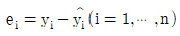
에 대한 성질이 아닌 것은?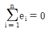
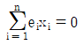
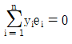
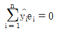
(정답률: 41%)
66. 확률분포에 대한 설명으로 틀린 것은?
- X가 연속형 균일분포를 따르는 확률변수일 때, P(X=x)는 모든 x에서 영(0)이다.
- 포아송분포의 평균과 분산은 동일하다.
- 연속확률분포의 확률밀도함수 f(x)와 x축으로 둘러싸인 부분의 면적은 항상 1이다.
- 정규분포의 표준편차 σ는 음의 값을 가질 수 있다.
(정답률: 51%)
67. 시험을 친 학생 중 국어합격자는 50%, 영어합격자는 60%이며, 두 과목 모두 합격한 학생은 15%라고 한다. 이때 임의로 한 학생을 뽑았을 때, 이 학생이 국어에 합격한 학생이라면 영어에도 합격했을 확률은?
- 10%
- 20%
- 30%
- 40%
(정답률: 55%)
68. 피어슨 상관계수에 관한 설명으로 옳은 것은?
- 두 변수가 곡선관계가 되었을 때 기울기를 의미한다.
- 두 변수가 모두 질적변수일 때만 사용한다.
- 상관계수가 음일 경우는 어느 한 변수가 커지면 다른 변수도 커지려는 경향이 있다.
- 단순회귀분석에서 결정계수의 제곱근은 반응변수와 설명변수의 피어슨 상관계수이다.
(정답률: 45%)
69. 두 변수 간의 상관계수에 대한 설명 중 틀린 것은?
- 한 변수의 값이 일정할 때 상관계수는 0이 된다.
- 한 변수의 값이 다른 변수값보다 항상 100만큼 클 때 상관계수는 1이 된다.
- 상관계수는 변수들의 측정단위에 따라 변할 수 있다.
- 상관계수가 0일 때는 두 변수의 공분산도 0이 된다.
(정답률: 27%)
70. 단순회귀모형 Yi=α+βxi+εi(i=1,2,…,n)을 적합하여 다음을 얻었다.
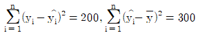
이때 결정계수 r2을 구하면? (단,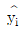
는 i번째 추정값을 나타낸다.)- 0.4
- 0.5
- 0.6
- 0.7
(정답률: 40%)
71. 비가 오는 날은 임의의 한 여객기가 연착할 확률이 1/10이고, 비가 안 오는 날은 여객기가 연착할 확률이 1/50이다. 내일 비가 올 확률이 2/5일 때, 비행기가 연착할 확률은?
- 0.06
- 0.⑤6
- 0.⑤2
- 0.048
(정답률: 46%)
72. 성공확률이 0.5인 베르누이 시행을 독립적으로 10회 반복할 때, 성공이 1회 발생할 확률 A와 성공이 9회 발생할 확률 B 사이의 관계는?
- A < B
- A = B
- A > B
- A + B=1
(정답률: 52%)
73. 왜도가 0이고 첨도가 3인 분포의 형태는?
- 좌우 대칭인 분포
- 왼쪽으로 치우친 분포
- 오른쪽으로 치우친 분포
- 오른쪽으로 치우치고 뾰족한 모양의 분포
(정답률: 60%)
74. 단순회귀모형 Yi=β0+β1xi+εi, εi~N(σ, σ2)에 관한 설명으로 틀린 것은?
- εi들은 서로 독립인 확률변수이다.
- Y는 독립변수이고 x는 종속변수이다.
- β0, β1,σ2은 회귀모형에 대한 모수이다.
- 독립변수가 종속변수의 기댓값과 직선 관계인 모형이다.
(정답률: 45%)
75. 성공률이 p인 베르누이 시행을 4회 반복하는 실험에서 성공이 일어난 횟수 X의 표준편차는?
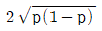
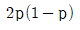
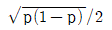
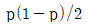
(정답률: 41%)
76. 평균이 μ이고 분산이 σ2인 임의의 모집단에서 확률표본 X1, X2, …, Xn을 추출하였다. 표본평균  에 대한 설명으로 틀린 것은?
에 대한 설명으로 틀린 것은?
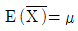
이다.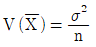
이다.- n이 충분히 클 때,
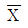
의 근사분포는 N(μ, σ2)이다. - n이 충분히 클 때,
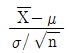
의 근사분포는 N(0, 1)이다.
(정답률: 37%)
77. 다중선형회귀분석에 대한 설명으로 틀린 것은?
- 결정계수는 회귀직선에 의해 종속변수가 설명되어지는 정도를 나타낸다.
- 추정된 회귀식에서 절편은 독립변수들이 모두 0일 때 종속변수의 값을 나타낸다.
- 회귀계수는 해당 독립변수가 1단위 증가하고 다른 독립변수는 변하지 않을 때, 종속변수의 증가량을 뜻한다.
- 각 회귀계수의 유의성을 판단할 때는 정규분포를 이용한다.
(정답률: 34%)
78. 중회귀모형에서 결정계수에 대한 설명으로 옳은 것은?
- 결정계수는 1보다 큰 값을 가질 수 있다.
- 상관계수의 제곱은 결정계수와 동일하다.
- 설명변수를 통한 반응변수에 대한 설명력을 나타낸다.
- 변수가 추가될 때 결정계수는 감소한다.
(정답률: 32%)
79. 가정 난방의 선호도와 방법에 대한 분할표가 다음과 같다. 난방과 선호도가 독립이라는 가정 하에서 “가스난방”이 “아주 좋다”에 응답한 셀의 기대도수를 구하면?
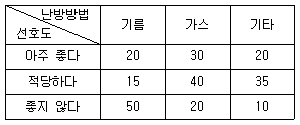
- 26.25
- 28.25
- 31.25
- 32.45
(정답률: 27%)
80. 다음은 어느 한 야구선수가 임의의 한 시합에서 치는 안타수의 확률분포이다. 이 야구선수가 내일 시합에서 2개 이상의 안타를 칠 확률은?
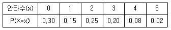
- 0.2
- 0.25
- 0.45
- 0.55
(정답률: 54%)
81. 어느 회사에 출퇴근하는 직원들 500명을 대상으로 이용하는 교통수단을 지하철, 자가용, 버스, 택시, 지하철과 택시, 지하철과 버스, 기타의 분야로 나누어 조사하였다. 이 자료의 정리방법으로 적합하지 않은 것은?
- 도수분표표
- 막대그래프
- 원형그래프
- 히스토그램
(정답률: 41%)
82. 모평균에 대한 신뢰구간의 길이를 1/4로 줄이고자 한다. 표본 크기를 몇배로 해야 하는가?
- 1/4배
- 1/2배
- 2배
- 16배
(정답률: 46%)
83. 다음 중 단위가 다른 두 집단의 자료 간 산포를 비교하는 측도로 가장 적절한 것은?
- 분산
- 표준편차
- 변동계수
- 표준오차
(정답률: 46%)
84. 다음은 A병원과 B병원에서 각각 6명의 환자를 상대로 환자가 병원에 도착하여 진료서비스를 받기까지의 대기시간(단위:분)을 조사한 것이다. 두 병원의 진료서비스 대기시간에 대한 비교로 옳은 것은?
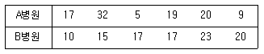
- A병원의 평균 = B병원의 평균,
A병원의 분산 < B병원의 분산 - A병원의 평균 = B병원의 평균,
A병원의 분산 > B병원의 분산 - A병원의 평균 > B병원의 평균,
A병원의 분산 < B병원의 분산 - A병원의 평균 < B병원의 평균,
A병원의 분산 > B병원의 분산
(정답률: 55%)
85. 철선을 생산하는 어떤 철강회사에서는 A, B, C 세 공정에 의해 생산되는 철선의 인장강도(㎏/cm2)에 차이가 있는가를 알아보기 위해 일원배치법을 적용하였다. 각 공정에서 생산된 철선의 인장강도를 5회씩 반복 측정한 자료로부터 총제곱합 606, 처리제곱합 232를 얻었다. 귀무가설 “H0: A, B, C 세 공정에 의한 철선의 인장강도에 차이가 없다.”를 유의수준 5%에서 검정할 때, 검정통계량과 검정결과로 옳은 것은? (단, F(2, 12;0.⑤)=3.89, F(3, 11;0.⑤)=3.59이다.)
- 3.72, H0를 기각함
- 2.72, H0를 기각함
- 3.72, H0를 기각하지 못함
- 2.72, H0를 기각하지 못함
(정답률: 36%)
86. 어떤 기업체의 인문사회계열 출신 종업원 평균급여는 140만원, 표준편차는 42만원이고, 공학계열 출신 종업원 평균급여는 160만원, 표준편차는 44만원일 때의 설명으로 틀린 것은?
- 공학계열 종업원의 평균급여 수준이 인문사회계열 종업원의 평균급여 수준보다 높다.
- 인문사회계열 종업원 중 공학계열 종업원보다 급여가 더 높은 사람도 있을 수 있다.
- 공학계열 종업원들 급여에 대한 중앙값이 인문사회 계열 종업원들 급여에 대한 중앙값보다 크다고 할 수는 없다.
- 인문사회계열 종업원들의 급여가 공학계열 종업원들의 급여에 비해 상대적으로 산포도를 나타내는 변동계수가 더 작다.
(정답률: 42%)
87. 어느 대학생들의 한 달 동안 다치는 비율을 알아보기 위하여 150명을 대상으로 조사한 결과 그 중 90명이 다친 것으로 나타났다. 다칠 비율 p의 점추정치는?
- 0.3
- 0.4
- 0.5
- 0.6
(정답률: 61%)
88. 기존의 금연교육을 받은 흡연자들 중 30%가 금연을 하는 것으로 알려져 있다. 어느 금연 운동단체에서는 새로 구성한 금연교육 프로그램이 기존의 금연교육보다 훨씬 효과가 높다고 주장한다. 이 주장을 검정하기 위해 임의로 택한 20명의 흡연자에게 새 프로그램으로 교육을 실시하였다. 검정해야 할 가설은 H0:p=0.3 대 H1:p=＞0.3 (p: 새 금연교육을 받은 후 금연율)이며, X를 20명 중 금연한 사람의 수라 할 때 기각역을 “X ≥ 8”로 정하였다. 이때, 유의수준은?
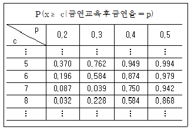
- 0.032
- 0.228
- 0.584
- 0.868
(정답률: 42%)
89. 다음은 어느 손해보험회사에서 운전자의 연령과 교통법규 위반횟수 사이의 관계를 알아보기 위하여 무작위로 추출한 18세 이상, 60세 이하인 500명의 운전자 중에서 지난 1년 동안 교통법규위반 횟수를 조사한 자료이다. 두 변수 사이의 독립성검정을 하려고 할 때 검정통계량의 자유도는?
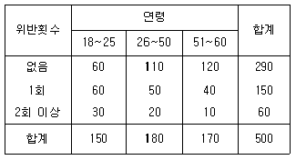
- 1
- 3
- 4
- 9
(정답률: 50%)
90. 어느 회사에서 만들어낸 제품의 수명의 표준편차는 50이라고 한다. 제품 100개를 생산하여 실험한 결과 수명평균(
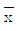
)이 280이었다. 모평균의 신뢰구간에 대한 설명으로 틀린 것은?- 표본평균
 가 모평균 μ로부터 1.96σ√n=9.8이내에 있을 확률은 약 0.95이다.
가 모평균 μ로부터 1.96σ√n=9.8이내에 있을 확률은 약 0.95이다. - 부등식
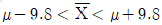
은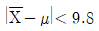
또는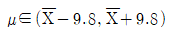
로 표현 가능하다. - 100개의 시제품의 표본평균
 를 구하는 작업을 무한히 반복하여 구해지는 구간들
를 구하는 작업을 무한히 반복하여 구해지는 구간들 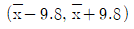
가운데 약 95%는 모평균 μ를 포함할 것이다. - 모평균 μ가 95% 신뢰구간
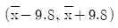
에 포함될 확률이 0.95이다.
(정답률: 27%)
91. 어느 투자자가 구성한 포트폴리오의 기대수익률이 평균 15%, 표준편차 3%인 정규분포를 따른다고 한다. 이때 투자자의 수익률이 15% 이하일 확률은?
- 0.25
- 0.375
- 0.475
- 0.5
(정답률: 42%)
92. 다음 중 이산확률변수에 해당하는 것은?
- 어느 중학교 학생들의 몸무게
- 습도 80%의 대기 중에서 빛의 속도
- 장마기간 동안 A도시의 강우량
- 어느 프로야구 선수가 한 시즌 동안 친 홈런의 수
(정답률: 51%)
93. 흡연자 200명과 비흡연자 600명을 대상으로 한 흡연장소에 관한 여론조사 결과가 다음과 같다. 비흡연자 중 흡연금지를 선택한 사람의 비율과 흡연자 중 흡연금지를 선택한 사람의 비율 간의 차이에 대한 95% 신뢰구간은? (단, P(Z≤1.96)=0.025이다.)
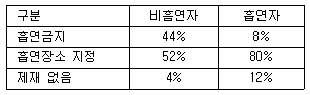
- 0.24±0.08
- 0.36±0.⑤
- 0.24±0.18
- 0.36±0.16
(정답률: 32%)
94. 이산형 확률변수 X의 확률분포가 다음과 같을 때, 확률변수 X의 기댓값은?
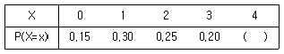
- 1.25
- 1.40
- 1.65
- 1.80
(정답률: 44%)
95. 다음은 처리(treatment)의 각 수준별 반복수이다. 오차제곱합의 자유도는?
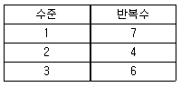
- 13
- 14
- 15
- 16
(정답률: 34%)
96. 두 변량 중 X를 독립변수, Y를 종속변수로 하여 X와 Y의 관계를 분석하고자 한다. X가 범주형 변수이고 Y가 연속형 변수일 때 가장 적합한 분석 방법은?
- 회귀분석
- 교차분석
- 분산분석
- 상관분석
(정답률: 41%)
97. 가설검정에 대한 다음 설명 중 틀린 것은?
- 귀무가설이 참일 때, 귀무가설을 기각하는 오류를 제1종 오류라고 한다.
- 대립가설이 참일 때, 귀무가설을 기각하지 못하는 오류를 제2종 오류라고 한다.
- 유의수준 1%에서 귀무가설을 기각하면 유의수준 5%에서도 귀무가설을 기각한다.
- 주어진 관측값의 유의확률이 5%일 때, 유의수준 1%에서 귀무가설을 기각한다.
(정답률: 43%)
98. 확률변수 X가 이항분포 B(36, 1/6)을 따를 때, 확률변수 Y=√5X+2 표준편차는?
- √5
- 5√5
- 5
- 6
(정답률: 39%)
99. 중심극한정리(central limit theorem)는 어느 분포에 관한 것인가?
- 모집단
- 표본
- 모집단의 평균
- 표본의 평균
(정답률: 45%)
100. 분산분석에 관한 설명으로 틀린 것은?
- 3개의 모평균을 비교하는 검정에서 분산분석으로 사용할 수 있다.
- 서로 다른 집단 간에 독립을 가정한다.
- 분산분석의 검정법은 t-검정이다.
- 각 집단별 자료의 수가 다를 수 있다.
(정답률: 46%)